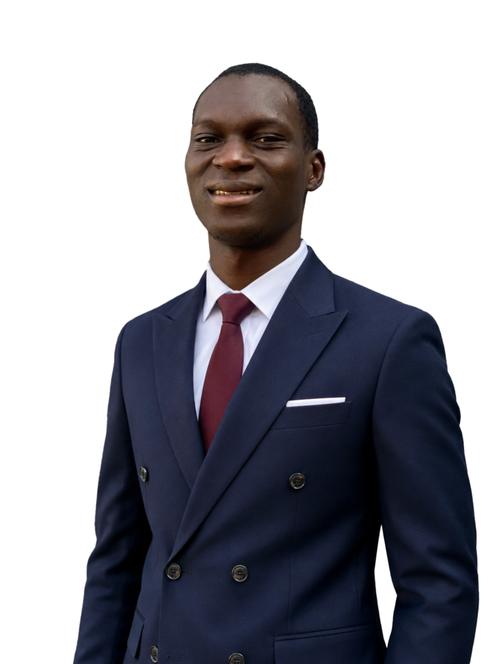

Renewable Energy
Solar systems, storage, asset monitoring and sustainable infrastructure.
Electrical and Computer Engineer working across renewable energy, intelligent systems, data analysis and engineering project leadership.
“I build and solve problems.”

I am an Electrical and Computer Engineering graduate student at Carnegie Mellon University Africa with experience in renewable energy systems, power-system analysis, machine learning, data analytics and engineering project development.
My work connects physical infrastructure with intelligent digital systems. I am especially interested in technologies that improve the reliability, accessibility and sustainability of energy systems across Africa.
Solar systems, storage, asset monitoring and sustainable infrastructure.
Machine learning, predictive analysis, anomaly detection and visualization.
MATLAB/Simulink, control systems, machines and power electronics.
Research, project coordination, documentation and technical pitching.
Projects selected for engineering depth, reproducibility, practical relevance and evidence of personal contribution.
A solar asset-intelligence platform helping households, installers and fleet operators plan systems, monitor performance, identify losses and receive understandable maintenance guidance.
Designed a preliminary off-grid system for a Kigali cooperative cold room using load modelling, PVGIS resource data, autonomy analysis and reproducible Python calculations.
Modelled classical scalar control of a 3 kW induction motor for a tea-withering fan, including low-speed voltage boost and PI-assisted closed-loop regulation.
A Python logistics-management system supporting tracking, invoicing, persistence, reports, waybills and robust failure handling.
Mastercard Foundation Scholar pursuing advanced engineering, computing, research and innovation.
Supported laboratory learning, explained technical concepts and maintained academic documentation.
Coordinated community projects, volunteers, reports and stakeholder engagement.
Gained practical exposure to electricity distribution and power-system workflows.
Graduated with First Class Honours and a cumulative GPA of 4.59/5.00.
B.Eng. Electrical Engineering, Ahmadu Bello University.
Graduate scholarship supporting academic excellence, leadership and transformative impact.
Training in project-management principles and Microsoft Project, aligned with PMI curriculum.
Training in workplace safety, risk assessment, incident investigation and supervision.
Training covering quality-system assessment and ISO 9001:2015 principles.
Recognized for project leadership and sustainable-development service.
Credential summaries intentionally exclude certificate numbers, service identifiers, QR codes and signatures.
I welcome engineering, research, internship, employment and project-collaboration opportunities in renewable energy, intelligent systems, data and sustainable technology.